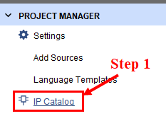
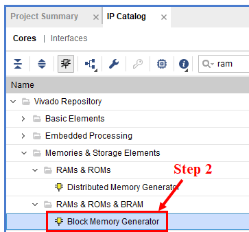
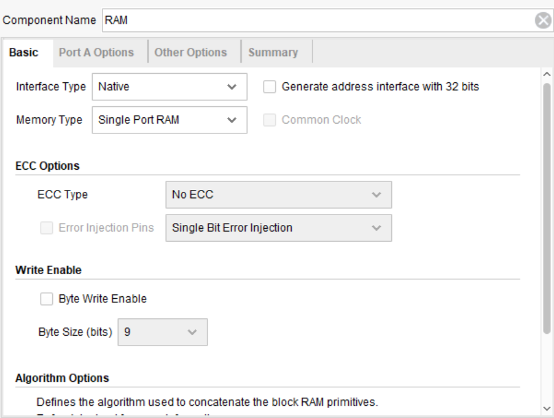
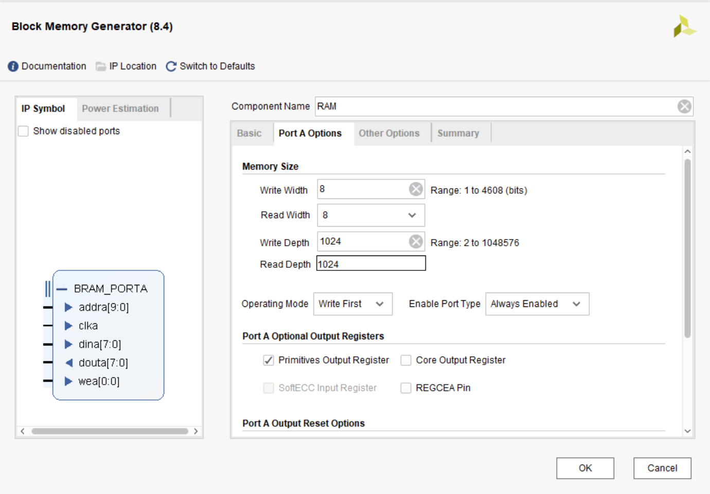
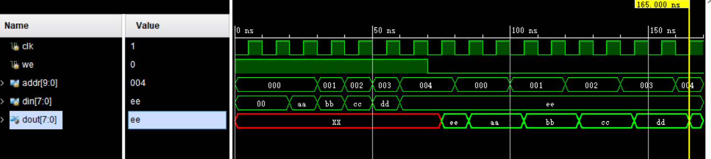

Digital Logic: Memory and IP Cores
Objectives
- Understand the fundamental concepts and operation of memory.
- Master the design of a single-port RAM in Verilog.
- Learn to use the Vivado Block RAM IP core to design efficient memory.
1. Memory Fundamentals
| Characteristic | RAM (Random Access Memory) | ROM (Read-Only Memory) |
|---|---|---|
| Full name | Random Access Memory | Read-Only Memory |
| Access | Read and write | Read only |
On an FPGA, we primarily use Block RAM, a hardware resource within the FPGA that provides high bandwidth and low latency.
As shown below, a memory is accessed through addr.
If a memory has K address bits and each storage location is N bits wide, its capacity is N × 2^K bits.

2. Verilog Implementation: Single-Port RAM
A single-port RAM can perform only one operation at a time—either a read or a write—but has the lowest cost.
2.1 Asynchronous Read
The read path is combinational, so data is available immediately.
module ram_single_port #(
parameter ADDR_WIDTH = 10, // 地址宽度（2^10 = 1024个单元）
parameter DATA_WIDTH = 8 // 数据宽度（8位）
) (
input clk,
input we, // 写使能（高电平写入）
input [ADDR_WIDTH-1:0] addr, // 地址
input [DATA_WIDTH-1:0] din, // 数据输入
output [DATA_WIDTH-1:0] dout // 数据输出
);
// 声明存储体：1024×8 的 RAM
reg [DATA_WIDTH-1:0] mem [0:(1<<ADDR_WIDTH)-1];
// 同步读写
always @(posedge clk) begin
if (we)
mem[addr] <= din; // 写入
end
// 异步读出（组合逻辑）
assign dout = mem[addr];
endmodule
Key points:
reg [7:0] mem [0:1023]defines 1024 storage locations of eight bits each.mem[addr] <= dinperforms the write on the rising edge of the clock.dout = mem[addr]is a combinational read with no clock-cycle latency.
2.2 Synchronous Read
The read path is sequential and has a one-cycle latency. Place the read logic in an always block and use a non-blocking assignment:
module ram_sync_read #(
parameter ADDR_WIDTH = 10,
parameter DATA_WIDTH = 8
) (
input clk,
input we,
input [ADDR_WIDTH-1:0] addr,
input [DATA_WIDTH-1:0] din,
output reg [DATA_WIDTH-1:0] dout
);
reg [DATA_WIDTH-1:0] mem [0:(1<<ADDR_WIDTH)-1];
always @(posedge clk) begin
if (we)
mem[addr] <= din;
else
dout <= mem[addr]; // 同步读出
end
endmodule
Key points:
dout <= mem[addr]: The read is sequential and captures data on a rising edge of the clock.- Advantage: It integrates naturally with sequential designs and supports pipelining.
2.3 Initializing RAM for ROM-Like Operation
Sometimes a RAM must already contain data at power-up, such as program code or a lookup table:
module ram_with_init #(
parameter DATA_WIDTH = 10,
parameter ADDR_WIDTH = 8
) (
input clk,
input we,
input [ADDR_WIDTH-1:0] addr,
input [DATA_WIDTH-1:0] din,
output [DATA_WIDTH-1:0] dout
);
reg [DATA_WIDTH-1:0] mem [0:(1<<ADDR_WIDTH)-1];
// 从文件初始化
initial begin
$readmemh("mem_init.hex", mem); // 从 .hex 文件读取数据
end
always @(posedge clk) begin
if (we)
mem[addr] <= din;
end
assign dout = mem[addr];
endmodule
.hex file format (hexadecimal):
3C // 地址 0
10 // 地址 1
A5 // 地址 2
FF // 地址 3
...
3. Vivado Block RAM IP Core
3.1 Why Use an IP Core?
A RAM written manually in Verilog may not make optimal use of the FPGA's physical Block RAM resources during synthesis. Vivado's Block RAM IP core provides:
- Automatic optimization to use FPGA Block RAM resources efficiently.
- Multiple configuration options, including width, depth, and initial values.
- Better performance and lower resource use than a manually written RTL implementation.
3.2 Creating a Block RAM IP Core
Step 1: Open the IP Catalog
In Vivado, select Project Manager → IP Catalog.

Step 2: Search for Block RAM
Enter Block Memory Generator in the search box and select the official Xilinx IP.

Step 3: Configure the Parameters
Open the IP Customization dialog and configure it as shown in the following figures.


Step 4: Generate the IP Core
- Click
OKto finish the configuration. - Vivado generates the RTL and simulation files.
- The IP core appears in the project's
ip_repo.
3.3 Block RAM IP Interface
The generated Block RAM IP core has the following ports for a single-port configuration:
module blk_mem_gen_0 (
input clka, // 时钟
input wea, // 写使能（[0] 对应字节使能）
input [9:0] addra, // 地址
input [7:0] dina, // 数据输入
output [7:0] douta // 数据输出
);
Instantiating the Block RAM IP in a Design
module ram_controller (
input clk,
input we,
input [9:0] addr,
input [7:0] din,
output [7:0] dout
);
// 调用生成的 IP 核
blk_mem_gen_0 ram_inst (
.clka(clk),
.wea(we),
.addra(addr),
.dina(din),
.douta(dout)
);
endmodule
4. Practice: Simulating a Simple RAM
4.1 Requirements
Design and verify a basic RAM module with the following behavior:
- Capacity: 1024 × 8 bits (10 address bits and 8 data bits)
- Operations: Synchronous read and synchronous write
- Test: Write several values to different addresses, then read them back and verify them
4.2 RAM Module Implementation
Design description:
addris 10 bits wide and addresses 2^10 = 1024 locations.- A high
weperforms a write; a lowweperforms a read. - Both reads and writes occur on a rising edge of the clock. The read output becomes valid on the rising edge after a stable address has been applied.
- The design may be implemented either in Verilog or with the IP core.
4.3 Simulation Test
Testbench procedure:
- Write phase: Write test data to several addresses.
- Read phase: Read the previously written addresses and verify the returned data.
